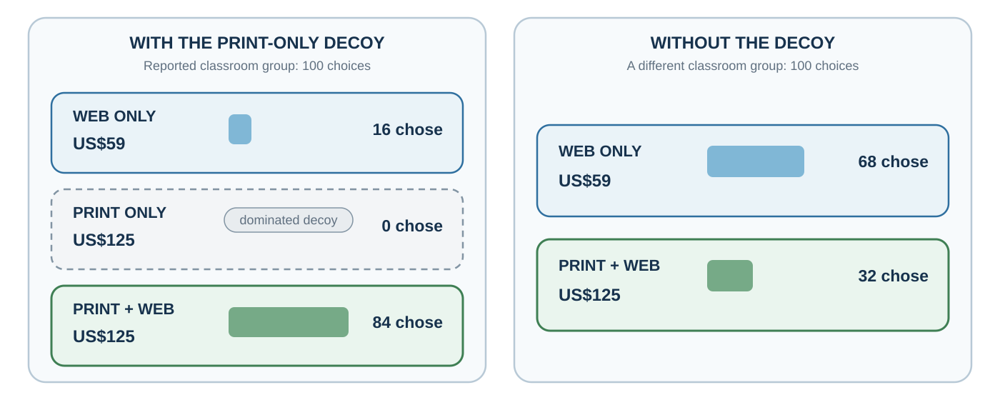

11 When Context Rewrites Comparison
How first numbers, global impressions, and surrounding options redraw what seems plausible
“Adding such an alternative to a choice set can increase the probability of choosing the item that dominates it.”
— Joel Huber, John W. Payne, and Christopher Puto, “Adding Asymmetrically Dominated Alternatives”, 1982, p. 90
You are choosing between online access and a more expensive print-plus-online subscription. Then a third offer appears: print alone at exactly the same price as print plus online. You would never buy it, yet the combined offer suddenly looks easier to justify.
The added option has changed no feature of the original two. It has made an easy comparison available, even though the real question remains whether you would use enough of the extra service to justify its cost. Similar shifts can occur when a first number starts a discussion or one favorable impression colors everything that follows. To make the judgment answer to your objective, you need to identify which comparison is doing the work.
Learning goals
- Explain anchoring and insufficient adjustment.
- Separate a global halo or horn impression from dimension-specific evidence.
- Test whether a preference survives removal or rearrangement of a decoy.
The first number enters first
An uncertain estimate needs a starting point. The first available number supplies one, but it can also pull the judgment toward a value with little connection to the question. For a budget or an offer, that starting point can shape how much is spent or conceded.
Anchoring occurs when an initial value influences later judgment, even if the initial value is arbitrary or irrelevant. Tversky and Kahneman (1974) demonstrated anchoring by spinning a wheel of fortune rigged to land on either 10 or 65. Participants then estimated the percentage of African countries in the United Nations. Those who saw 65 gave higher estimates than those who saw 10, even though the number was random.
Anchoring is powerful because uncertain judgments need starting points. Once a starting point appears, people often adjust insufficiently away from it. Anchors can also make anchor-consistent information more accessible (Mussweiler & Strack, 1999; Strack & Mussweiler, 1997). If asked whether Gandhi was older or younger than 140 when he died, people know 140 is absurd, but it may still pull estimates upward compared with a lower anchor.
In a budget discussion, last year’s figure may become the starting point before anyone examines current needs. A negotiation offer can similarly establish a range that later discussion struggles to leave. Whether that influence is useful depends on the number’s relevance and evidence.
Ariely, Loewenstein, and Prelec (2003) showed that even arbitrary anchors, such as the last two digits of a social security number, could influence willingness to pay for consumer goods. Participants first considered whether they would pay an amount equal to those digits, then stated their maximum willingness to pay. Higher arbitrary numbers led to higher valuations. The result illustrates how fragile valuation can be when people lack stable reference points.
Anchoring is not always irrational. In many situations, first estimates contain useful information. If an expert provides a starting estimate, it may be reasonable to use it. The problem is that anchors influence judgment even when they are irrelevant, extreme, strategic, or weakly justified.
A practical defense is to collect estimates and their evidence before the proposed number is revealed. Once an anchor is known, imagining that it was never seen is an imperfect substitute. Independent market data or a fresh estimate from someone who has not seen the proposal may add more than another adjustment to the original number.

Figure 11.1 deliberately separates effect from mechanism. “Insufficient adjustment” is not a complete definition of anchoring: anchor-consistent information can become selectively accessible, and scale use or conversational inferences can also contribute in some tasks (Mussweiler & Strack, 1999; Strack & Mussweiler, 1997). Asymmetric dominance defines the decoy relation (Huber et al., 1982). The diagnostic question is therefore first whether the context changed judgment, and then which mechanism the evidence can distinguish.
Halo and horn effects
An engaging interview gives the committee evidence about how the candidate comes across. It can nevertheless make reliability or technical ability seem established before either has been tested. A decision that needs several kinds of evidence may then rest on a single impression.
The halo effect occurs when an overall impression influences judgments of specific traits. A positive impression in one area spills over into unrelated judgments. A negative impression can produce a “horn effect,” where one negative quality colors everything else (Thorndike, 1920).
An engaging interview may create a favorable overall impression that spills into judgments of reliability or technical ability. Those qualities can be related, but each needs evidence. A coherent portrait is not a substitute for examining where the evidence is strong and where it is missing.
Solomon Asch’s classic work on impression formation showed that the order and valence of traits shape overall impressions. A person described as intelligent, industrious, impulsive, critical, stubborn, and envious is judged differently from a person described with the same traits in reverse order (Asch, 1946). Early information shapes the frame through which later information is interpreted.
Nisbett and Wilson (1977a) demonstrated a halo effect in evaluations of a lecturer. Participants watched the same instructor behave either warmly or coldly. Those who saw the warm version rated not only his personality but also his appearance, mannerisms, and accent more favorably. They often did not realize that their global impression had influenced specific judgments.
Business analysis can suffer from the same problem when successful results prompt favorable retrospective ratings of leadership, culture, and strategy (Rosenzweig, 2007). Outcome knowledge changes the overall impression, then the impression seems to explain the outcome.
For a hiring decision, gather comparable evidence for each criterion before forming the overall assessment. Rate technical work from a work sample, for example, and record the evidence for reliability separately. An early awkward answer or a confident manner should not silently determine every rating.
The decoy changes the comparison
Rejecting an inferior offer should leave us free to assess the remaining options on their merits. Yet the act of comparing them with that offer may already have changed which one looks worthwhile. The subscription case lets us test this by holding the original options fixed and changing the surrounding menu.
The attraction effect occurs when adding an asymmetrically dominated decoy increases choice of the option that dominates it (Huber et al., 1982). The target is at least as good as the decoy on the relevant attributes and better on at least one, while the decoy is not dominated in the same way by the competing option. Suppose a customer is choosing between a cheaper online subscription and a more expensive print-plus-online subscription. If a print-only subscription is added at the same price as print-plus-online, it is clearly inferior. Rationally, it should not be chosen. Yet its presence can make the print-plus-online option look like a better deal and increase its choice share.
The decoy works because people often evaluate value relatively. They may not know whether print-plus-online is worth the price in absolute terms. But compared with print-only at the same price, it looks attractive. The decoy creates an easy comparison.
Ariely (2008) reported a classroom demonstration using a subscription menu displayed on Economist.com. One group of 100 participants saw three options: web only for US$59, print only for US$125, and print plus web for US$125. Sixteen chose web only, nobody chose print only, and 84 chose print plus web. A different group of 100 saw the same menu without the print-only option. This time, 68 chose web only and 32 chose print plus web. The option nobody selected therefore changed the distribution of choices between the two remaining options.

Figure 11.2 is memorable because the decoy received no choices, yet its removal changed what people selected. Huber et al. (1982) provide the experimental foundation for this attraction effect.
Not every menu effect is an attraction effect. An extremely expensive wine may make another price seem moderate, and an added premium package may make a middle option look like a compromise. Those examples need not contain an asymmetrically dominated decoy. Identify the actual comparison before assigning a mechanism.
For the subscription, remove print-only and evaluate what the combined package adds over online access for you. The comparison becomes harder, but it addresses the value of what you would actually use.
Three forms of contextual comparison
An anchor influences an estimate, a halo spreads an impression across attributes, and a decoy changes the menu used to compare options. Their shared lesson is to inspect what the setting made easy to compare. Their remedies differ, as the hiring example shows.
The hiring case: context before evidence
Return to the product-manager search. The committee wants evidence of future performance, but it must first decide what counts as a plausible candidate and a useful comparison. Context can settle those questions before the evidence is examined.
One committee member proposes that a strong candidate should have “about eight years” of experience. That number can anchor later discussion even if job analysis does not justify it. The first applicant is warm, confident, and from a prestigious firm; the global impression can spill into ratings of judgment, learning, and reliability. The shortlist then includes a clearly weaker candidate whose profile resembles the prestigious applicant, making that applicant look dominant relative to the remaining candidate.
The three influences can reinforce one another. The anchor narrows the plausible range, the halo makes anchor-consistent evidence easier to interpret favorably, and the decoy creates an easy local comparison. The resulting confidence can reflect these comparisons as well as the candidate’s qualifications.
A structured process interrupts each pathway upstream. Define job outcomes and acceptable experience ranges before applications are discussed. Collect comparable work samples. Score evidence for each criterion independently before forming an overall judgment. Where a profile appears dominated on the agreed criteria, verify that judgment and ask whether removing it changes the comparison. Then compare the preferred candidate with an external performance standard, not merely with the designed shortlist.
Redesigning the process
These changes introduce evidence and comparisons that can challenge contextual influence before the final recommendation (Larrick, 2004). The table matches each problem to a practical step.
| Bias | Likely trigger | Process response |
|---|---|---|
| Anchoring | First number or range | Generate an independent estimate first |
| Halo | Strong global impression | Score criteria separately before discussion |
| Decoy/context | Comparison set defines value | Remove dominated options; compare pairwise and absolutely |
Practice Lab
Choose one hiring, budgeting, pricing, or purchasing decision. Produce a comparison audit with three versions: an estimate collected before the proposed anchor is revealed, using a new case or an unexposed observer if you already know it; criterion-by-criterion ratings made before an overall impression; and the same choice menu with every dominated option removed. Report which judgments changed, which remained stable, and what external standard should govern the final comparison.
Take it forward
The print-only offer was easy to reject. The harder question is whether the combined subscription is worth its extra cost when evaluated against what you need. Whenever an option suddenly looks compelling, identify the comparison that made it so and test whether another relevant comparison supports it.
References cited in this chapter
Ariely, D. (2008). Predictably irrational: The hidden forces that shape our decisions. HarperCollins.
Ariely, D., Loewenstein, G., & Prelec, D. (2003). “Coherent arbitrariness”: Stable demand curves without stable preferences. Quarterly Journal of Economics, 118(1), 73–106.
Asch, S. E. (1946). Forming impressions of personality. Journal of Abnormal and Social Psychology, 41(3), 258–290.
Huber, J., Payne, J. W., & Puto, C. (1982). Adding asymmetrically dominated alternatives: Violations of regularity and the similarity hypothesis. Journal of Consumer Research, 9(1), 90–98. https://doi.org/10.1086/208899
Larrick, R. P. (2004). Debiasing. In D. J. Koehler & N. Harvey (Eds.), Blackwell handbook of judgment and decision making (pp. 316–337). Blackwell.
Mussweiler, T., & Strack, F. (1999). Hypothesis-consistent testing and semantic priming in the anchoring paradigm: A selective accessibility model. Journal of Experimental Social Psychology, 35(2), 136–164.
Nisbett, R. E., & Wilson, T. D. (1977a). The halo effect: Evidence for unconscious alteration of judgments. Journal of Personality and Social Psychology, 35(4), 250–256.
Rosenzweig, P. (2007). The halo effect: … and the eight other business delusions that deceive managers. Free Press.
Strack, F., & Mussweiler, T. (1997). Explaining the enigmatic anchoring effect: Mechanisms of selective accessibility. Journal of Personality and Social Psychology, 73(3), 437–446.
Thorndike, E. L. (1920). A constant error in psychological ratings. Journal of Applied Psychology, 4(1), 25–29.
Tversky, A., & Kahneman, D. (1974). Judgment under uncertainty: Heuristics and biases. Science, 185(4157), 1124–1131.